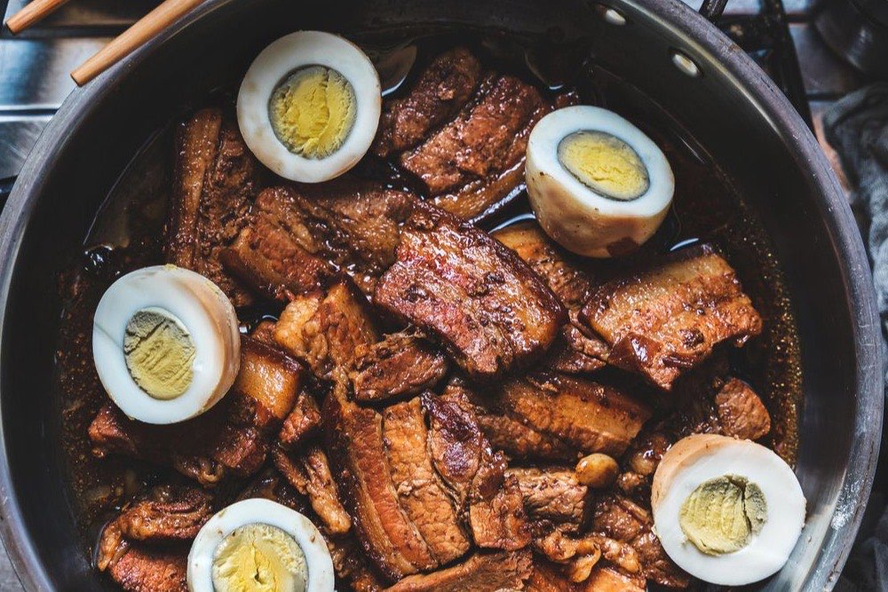
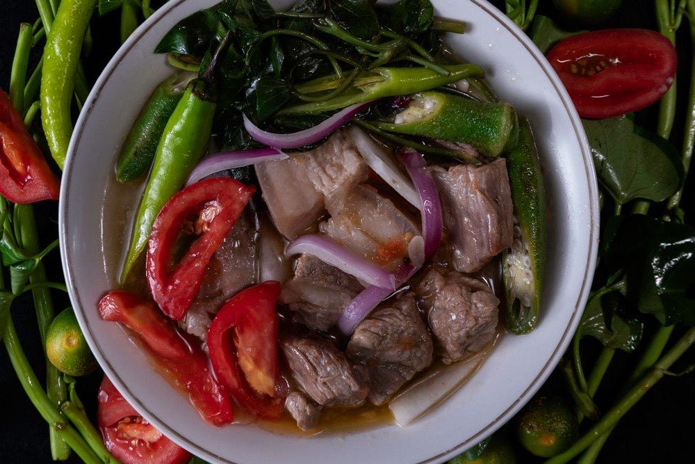

Filipino Recipes
Research-based cooking guides with sources and practical checks.
Choose a recipe by the time, ingredients and equipment you have. These are research-based editorial guides, not personally tested batches. Each page includes bilingual instructions, estimated times, ingredient notes and published sources. Check tenderness and temperature as you cook; times can vary.
Pumili ayon sa oras, sangkap at kagamitan. Mga gabay na nakabatay sa pananaliksik ang mga ito, hindi personal na nasubukang batch. May dalawang wika, tinatayang oras, tala sa sangkap at sanggunian. Suriin ang lambot at temperatura; maaaring mag-iba ang oras.

Chicken Adobo
Pork Sinigang Kare-Kare
Kare-Kare
 Lumpiang Shanghai
Lumpiang Shanghai
 Pancit Canton
Pancit Canton
 Champorado
Champorado
Choose your cooking plan
| Recipe | Total time estimate | Plan for |
|---|---|---|
| Chicken adobo | 90 minutes, including 30-minute marinade | Soy, vinegar, a pan for browning and braising. |
| Pork sinigang | 85 minutes | Tenderizing the pork before adding delicate vegetables. |
| Kare-kare | 220 minutes | Long oxtail cooking; peanut and shrimp-paste checks. |
| Lumpiang Shanghai | 50 minutes | Wrapping time and a thermometer for the pork filling. |
| Pancit canton | 40 minutes | Vegetable prep and checking the noodle package. |
| Champorado | 40 minutes | Checking the chocolate label and adjusting porridge texture. |
Pumili ng plano sa pagluto
| Recipe | Tinatayang kabuuang oras | Ihanda |
|---|---|---|
| Chicken adobo | 90 minuto, kasama ang 30-minutong marinade | Toyo, suka at kawali para sa pagpapabrown at simmer. |
| Pork sinigang | 85 minuto | Palambutin ang baboy bago ilagay ang dahon. |
| Kare-kare | 220 minuto | Mahabang pagpapalambot at pagsusuri sa mani at bagoong. |
| Lumpiang Shanghai | 50 minuto | Oras sa pagbabalot at thermometer para sa palamang baboy. |
| Pancit canton | 40 minuto | Paghahanda ng gulay at panuto sa noodle package. |
| Champorado | 40 minuto | Label ng chocolate at pag-aayos ng lapot. |
Our editorial approach · Ingredient and meal-planning guides